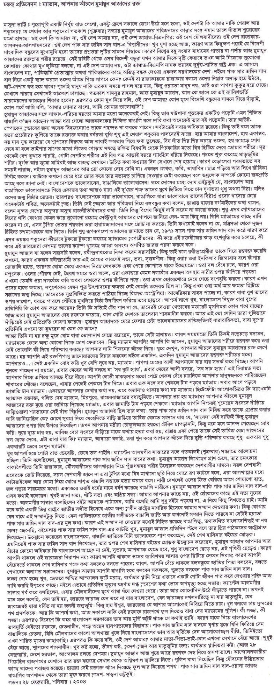

|
|
|
|||||||||||||||||||||||||||||
|
|
||||||||||||||||||||||||||||||
|
|
||||||||||||||||||||||||||||||
|
|
From: "Soumitra Bose"
PFA a statement from the international department of CPIML
liberation. Request thanks Communist Party of India (Marxist Leninist) -:Liberation takes a very serious note of the dastardly act by the fundamentalists and the religious-political hoodlums of Bangladesh of stabbing Prof Humayun Azad on the last day of Book Fair at Dhaka. We have pretty convincing reasons to believe that the present party in Government cannot absolve themselves of the responsibility. Bangladesh is now harbouring the most nefarious type of religious-fundamentalists and fascist terrorists. They are aided by Empire money directly and indirectly through the government channels as well. The imperialist designs of rendering Bangladesh an “unmanageable country” fits into the grand agenda of the US Empire and the international enemies of the people. The attack on Humayun Azad is just another step in the well-designed agenda of slowly shedding Bangladesh of the rational intelligentsia, who could be the leading voices against Empire, imperialism, religious-fanaticism and fascism. The vacuous battle cry against Islamic fundamentalism and religious terrorism by US Empire is nothing but hogwash. US imperialism and Islamic fundamentalism and in fact Indian Saffron Fascism are quite in hand and glove with each other. In the recent past couple of months the rational opinion leaders of Bangladesh are being attacked with full connivance of the Bangladesh administration and the ruling party goons. We are shocked and not bemused to see the crass inaction by the Bangladesh Government in nabbing the culprits. The culprits walked away in full daylight and even after being identified the authorities did not lift their little anatomy against them. The Indian progressive intelligentsia stand firmly by their Bangladeshi counterparts in their struggle against the common enemies of the South Asian people. Prof Azad belonged to the same corps of rational and conscientious fighters against the forces of reaction across the entire South Asia. We join the multitude of Bangladeshis who are now fighting their daily chores and battles against the anti-people government. The struggling voices from the Battlefields of India join the voices from Bangladesh. Our fight is one and the same. We, on behalf of the revolutionary forces of India, decline to express any sadness and frustration in this ghastly incident. We express our deepest ANGER, our WRATH, and our disdain against the ruling elite of Bangladesh. Not only in terms of mere solidarity but also in full camaraderie we too carry on our own struggle in our own soil against the SAFFRON fascism of India. We realize that Saffron fascism of India boosts a counteracting fascism in Bangladesh; therefore we consider our fight and the fight of the Bangladeshi comrades against their ruling fascists quite integrally connected Since the moment Prof Azad fell on the Dhaka pavement in pool of blood, we all the progressives of South Asia join the same struggle from every corners of South Asia. COUNT US ALONG! TURN ALL OUR GUNS AGAINST THE RULERS OF SOUTH ASIA!  I’m
in the same procession as you are I
die and live amongst you
The deadly assault on Dr Azad by the Jamati goons in
the DU campus, the sanctuary for the non-conformists and the iconoclasts, the fountainhead of all the greatest nationalist movements of Bangladesh, has been a fatal
blow inflicted on me on the eve of the greatest anticipation of joy a man can
ever have-fathering my first child. Over the last week, I felt like becoming a zombie minding my wife for
nights without sleep as she
has been in the throes of labor pain. On Saturday
at I see Dr Azad as the
greatest Bangladeshi critic
writing in Bangla.
I have always cherished an uncontainable admiration for him, a professor
of Bangla Dept, an
unconditional admiration that even the
snobbery, inculcated
in me by the ethos of the English
department, could not
smother. As a linguist and scholar he has
a great contribution
to Bangla culture, language,
literature and history. Unlike his counterparts in English department Dr
Azad never inspired intellectual pretension around him while engrossed in
more tangible gains afforded by means of sycophancy and connection through
the backdoors with the big shots of the establishment in the dead of night. The
mere range
of his publication dwarf the showy antels (fake intellectuals)
mushrooming the English Dept. For
example Dr Azad was (I
sincerely hope he survives denying the Saidi-Motya's assassins the lusty
paradise full of busty houris, but I believe Dr Ajoy Roy is right in
assuming that he has passed way and keeping it secret is Khaleda's, or her
panders, political strategy to drain public anger and their possible
backlash, and even he survives he might return as a retarded person because
the top brass of the CMH are often incompetent and fatally obliging to their
authority) more honest and intrepid than the fake sage of English dept who froths his mouth preaching secularism but
weds her
beautiful daughter to an uncouth razkar offspring, a pseudo guru who
eulogises Conradian moral imagination but launches political front for the Jamati
academics of DU; Dr Azad did not lick arses of the imbecile VCs
of DU and Zia's uncouth cadres to secure
proctorship of the
International hall; unlike the smart looking dumb academic he did not
memorise pages of Norton Critics without understanding the content to
impress the busty girls of the
department. Unlike his counterparts in the English dept Dr Azad neither had a
car nor chaired
the meetings of various
shonky organizations constructed and supported by century old Orientalist
/imperialist enterprises and structures. While
the majority of his
colleagues wallowed in the slime of the political
opportunities for tangible gains whether it be cash, position or
promotion, Dr Azad carried out
intellectual scrutinies to expose the structures of power and authority. Unlike his colleagues in English Department who rarely
publish anything beyond their PhD thesis written decades ago and thrive
solely on the intellectual pretensions they collaboratively inspire around
them and which conceal the irremediable mediocrity they doomed to be and
fated to perpetuate, Dr Azad analysed and exposed the
ideological structures Jamat and other Islamists (Zinnah to Zia) built
their political hegemony
on. His critical writing affords Bangalee readers insight
into the archeology of knowledge.
His writing inspires his readers to question all forms of authority
asserting controls over cultural, political or social sites where
individuals and collectives interact. From this point of view Dr Azad is
the spiritual successor of the intellectuals of This is exactly why Dr Azad was the target of the
Jamati goons. He led a very plain life in
the campus. Unlike his counterparts in the English department he had no car
and did not imitate the manners and lifestyles of what Sarat Chandra
described as Tash Firingee. Most
often I found him walking on foot or on the rickshaws smoking
absent-mindedly his only vocation and obsession obviously being reading,
thinking and writing. We met him often in the torpid afternoons at shabby
tea stalls around TSC, after a day’s study at the British Council library. We shared
the same cheap meal, a bowl of fried chickpeas and a cup of tea, the only snack we could afford for afternoon teas being
students of
Due to the wonted myopic visions of our so-called
literati, most of us failed to evaluate Dr
Azad. But his contribution was great. He enriched Bangla literature with
modernist and post modernist concepts and ideas. More importantly he created
and expanded our vocabulary (translation of Second Sex, the feminist bible)
enabling Bangalee readers to participate in modern discourses. Although
undervalued by the so-called Bangladeshi literati, his vile adversaries
rightly identified him as
their arch enemy and he is the one they eliminated first in order to
complete their unfinished task in 1971. This loss compelled me to a reality check. I'm hurt and
profoundly shocked. But instead of daunting my spirit this assault on Dr
Azad has erupted an uncontrollable rage in me. This fatal attack on my
intellectual partner made me revisit and reaffirm the promise I made in
1994. In the name of my assaulted
soulmate, in the name of
my yet unborn daughter, Saptarshea, I reiterate my promise: I’ll take up the unfinished intellectual project of Dr Azad and I
will commit myself, with my limited
capacity, to finish Dr Azad’s unfinished task. As
long as I survive I’ll fight the Islamic ideology
and the structures spawned and sustained by
such a corrosively medieval ideology. I’ll
translate his prominent works and share it with the rest of the world. Pages of
Muktadhara will confer Dr Azad an immortality his adversaries so violently
denied. Tito Scohel Email: tito_scohel@yahoo.com.au From: "Prodip Saha"
Attacks on Dr. Kamal Hossain and Professor Humayun Azad: Ensure Safety and Security and Bring the Culprits to Justice.HRCBM PRESS RELEASEFriday, February 28, 2004 The Human Right Congress for Bangladesh Minorities (HRCBM) condemns the attacks on Dr. Kamal Hossain and his entourage in Chittagong on his way to Rangamati on Monday, 23 February 2004, and on Professor Humayun Azad on Friday, 27 February 2004, in the strongest possible terms. ?XML:NAMESPACE PREFIX = O /> Dr. Kamal Hossain,
president of Gano Forum (People’s Forum) Party, is a valiant freedom
fighter, member of the Bangladesh Government in Exile during the War of
Liberation (1971), one of the architects of the Constitution of Bangladesh
(1972), an internationally recognized lawyer and expert on constitutional law,
a human rights advocate and founder of Ain-O-Shalishi Kendra (Center for Law
and Justice, a human rights organization in Bangladesh). We utterly condemn
the attack and fabrication of the incident by Mr. Altaf Hossain, the Home
Minister of Bangladesh, with a view to mislead the people of Bangladesh and
the international community. Dr. Humayun Azad,
Professor of Bengali, Dhaka University, a man of letters, an author, a
humanist, is well known home and abroad as an outspoken critic of the
betrayers of the War of Independence and collaborators of oppressing Pakistani
Junta, and a voice of secularism and Bengali conscience. We are deeply
concerned for his life and safety. We are shocked and speechless; we condemn
this act of cowardly violence against Professor Azad vehemently. As a state party to
ICPR, UDHR and other relevant instruments of human rights, the country must
bring an end to ongoing violation of human rights and restore fundamental
freedom and rights of the citizens in the country. We, together with the
international community, have witnessed, since the October 2001 General
Election, this kind of behavior by the present government denying attacks on
life and property of the people and barbaric violation of human rights of
citizens of Bangladesh, specially the religious and ethnic minorities,
journalists, authors, human rights activists, political leaders, leaders of
the opposition, and those who voice Bengali conscience and uphold humanity,
freedom and justice. We appeal to the
government of Bangladesh for prompt action and apprehension of the criminals
irrespective of their party affiliation. Once again, we are shocked and
alarmed to observe the collapse of the government and law and order in the
country. This trend of suppression of human rights and aggression in addition
to ongoing atrocities against minorities in the country infringe the very
basic norms of a civilized society. The perpetrators are
anti-Bangladesh, and anti-peace. We urge the government of Prime Minister
Khaleda Zia to conduct independent investigations of the incidents, give
exemplary punishment to the criminals so that “others of their ilk” never
dare to commit violence and human rights abuses again. We demand that safety
and security of Dr. Kamal Hossain and Professor Humayun Azad, in particular,
and all citizens of Bangladesh, in general, must be ensured. The law of the
land must be implemented without prejudice and any further deterioration. The
perpetrators must be dealt with an iron hand, and credibility of Bangladesh as
a civilized democratic country must be restored in the community of Nations.
The voice of conscience must be allowed to speak freely. Ajit K. Roy,
Ph.D. From: "Ketaki Kushari Dyson" STATEMENT OF PROTEST FROM LONDON BASED ORGANIZATIONS AND PERSONALITIES It is with deep regret and sorrow we are giving you the news of attack on Dr. Humayun Azad. This dastardly attack is threatening to cut short a life of a scholar and noted historian who was never afraid to speak of what he believed. Motives for the attempt on Dr. Azad's life could not be known immediately, but co-authors and the victim's family blamed a fundamentalist section that threatened him with death for the launch of his latest work 'Pak Sar Zamin Saad Baad' in November." Recently, a jamat leader Delwar Hossain Saidi demanded its banning and punishment of the author. We, the following organization and people, are deeply outraged by this incident and express our strongest protest. We urge upon the government to take immediate measures to protect fundamental human rights and punish the culprits. Shongjojon, Bengal Professionals (BOB) Abdul Gaffar Choudhury Urmi Rahman, Amirul Islam Chowdhury, Jonomot Nababuddin, Jonomot Shamim Azad, S N Sulaiman, Khadija Rahman Eeshita Azad, Asif Saleh, Drishtipat. London Bishsho Shahitto Kendro, London Zakir Hossain, Joglul Hossain, Abul Kalam Azad, Mukit Choudhury Ketaki Kushari Dyson Shaheen Zaman Renu Lutfa Hasneen Chudhury Urmi Mazhar Nahas Pasha Shafiqul Islam, UNB S M Sultana Shikha Dolly Islam Mushtaq qureshi Muslehuddin Ahmed Enam Ali Abdul Aziz Jahida Sattar Auruna Chowdhury Rafique Ahmed Julia Kar, Tabedar Rasul Bokul, Jaglul Hossain, Shahnaz Rahman From: "Dr. Ajoy Roy" Protest continues DU Campus: Different students organization brought out processions including Chhatra League and government supporting students wing of BNP. The BNP student front held a meeting in the campus. The speakers demanding culprits to rounded off alleged that AL has done this. This is not strange as their chairperson Begum Khaleda set the tune on 28th February in a public meeting at Dhaka. The Students League on the other hand pointed their fingers to Jamatis and other fundamentalists group, and at the same time they blamed the government Khaleda_Nizami for creating smoke around the incident by uttering irresponsible remarks on the part of the PM against AL. General students under the banner ‘We want trial of attackers of Dr. Humayun Azad’ brought out a rally, and held a day long meeting in front of the ‘Aparajeya Bangla’ in which speakers demanded resignation of home minister, elimination of terrorism from the campus, and exemplary punishment of the attackers. The speakers also condemned the PM and other BNP leaders including our bachal (talkative) home minister for making utterances to create confusion with a view to protect the real culprits.
The teachers today also abstained from the class in pretest of attempted murder of Dr. Azad. They also held sitting strike in front of the Arts Building. Many teachers too part in the sit down strike. Artist Hashem Khan, Dr. Muntasir Mamun and Dr. Golum Rahman spoke condemning Government’s attempt to cover the Jamati culprits by uttering irresponsible utterances by the PM and the home minister. Central Shahid Minar A mass rally was held under the auspices of Sammilito Sanskritik Jote (Combined Cultural Unity) in which all class of people joined... common people, artists, writers, political party leaders and cultural personalities. The speakers condemned the incident and blamed the government ’s failure to maintain a minimum standard of law and order in the country. In the very presence of a large number police force deployed in and around Bangla Academy premises, the attempted killers not only fatally injured Dr. Humayun Azad, a noted author and a university professor but also made their escape with ease. Why then deploy such bahini spending every day a huge amount of sum for them ? What is the use of maintaining such a big force with poor public money if it proves useless in need? Would you answer this simple questions, madam prime minister to your electorate? Do you have any? I wonder. Protest Meeting Held by Ghtak Dalal Nirmul Kamiti A protest meeting was also held at the BWV auditorium at Dhanmondi at 4-30 p.m. The meeting was presided over by Professor Kabir Chouduhury. A largely attended meeting was addressed by a galaxy of elites of our society, which included among others: Poet Shamsur Rahman Poet Sayed Shamsul Haq Professor Mustafa Nurul Islam Professor Ajoy Roy Justice K M Sobhan Dr. A. K. Azad Choudhury Dr. Muntasir Mamun Dr. Harun ar Rashid Dr. Borhan udddin Khan Jahangir Dr. Mubaswer Ulla Choudhury Artist Rafiqunnabi Artist Hashem Khan Mr. Shahriar Kabir Mrs. Shyamali Nasrin Choudhury All the speakers expressed that the present Khaleda_Nizami government has depicted itself as a fascist government and the BD as a police state in which none is safe who holds dissenting voice whether he is an AL, a left oriented politician, a liberal minded writer, a democrat believing in secularism and pluralism, a humanist protesting against human rights violation in any form, a free thinker, or even a common man if he is not a 4-party alliance supporter. They call upon all the social forces and liberal and left political parties to launch a united movement against the fascist state force and the communal-fundamentalist forces from a common platform. Dhaka 29th February, 11-45 p.m.
Picture: Assasination Attempt on Dr. Humayun Azad (Courtesy: Che.) From:
"Ernesto Guevara" Dear all,
Astounding
Similarities between Ancient and Modern Assassinations! By Syed Kamran Mirza [This write-up of mine is
dedicated to Professor Dr. Humayun Azad who was the latest victim of Islamic
assassination attempt by Bangladeshi Islamists] Summary of the similar Assassinations happened by the direct order/request of Prophet Muhammad. Every item (below) can be substantiated by Sahi hadiths available today:
Islamic histories, biographies and sahi hadiths
clearly and authentically witnessed that Merciful Prophet of Islam personally
requested, demanded and ordered his true followers to carry out these above
assassinations to protect his peaceful Islam. Similarly, Bangladeshi Razakars
and Islamists regularly inciting Islamic goons (Chatra-Shibirs) to assassinate
all Bangali Murtad-enemy of Islam, only to pave the way to make Bangladesh an
Islamic paradise like Talibani Afghanistan.
In both cases (Ancient and modern) the causes and methods are identically 100% similar. Perhaps, many can not quite conceive why these Islamic goons used Chapatis (read sword of Bangalees) and Axes to assassinate Bangali Murtads instead of using simple and sure method of bullets. This is because they are the true Muslims and true followers of the best human Prophet Muhammad. It’s not true that they have any shortage of guns and pistols. But they are afraid to disobeying Prophet’s methods and tactics. They are desperate to get full benefits (getting lucrative Islamic heavens as promised by the Quran) of their service to Islam. Therefore they are bound to use Prophetic methods (read Islamic style) of assassinating the enemies of Allah and Prophet by silting necks, cutting hands and legs by Bangladeshi sword (read chapatti, ax, knives). My only feeble hope that, perhaps the present uprising
of freedom-loving Banglalees will be able to upset Mullah’s dream by
toppling Khaleda-Nizami Govt. and save Humayun Azad and a few Self-Criticisms
By Dr. Asif Nazrul
Professor Humayun Azad used to refer white group as the group of purity. In 1987 the white group, composed of Dhaka University’s teachers, arranged a meeting under the leadership of Sirazul Islam, and Dr. Azad was one of the main speakers in that meeting. He had participated in the Senate Election under the same white party, and once he had performed his duty as the warden of international dormitory. He did not actively participate in the white party for long, and neither did he join in another faction. Instead, as a truth seeker, this academician delved entirely into writing for his self-development of social thoughts and freethinking. He became the bearer of free, independent and greed-less pen. That pen would become a threat for his life; this premonition was there for many years. Political parties and various related groups who misuse religion demanded the banning of his writings. Several threats to his life cropped up more than once, and at last, that threat became the truth in his life. In his writings, dark or darkness related issues used to emerge in roundabout way. He tried to elucidate dark as the fundamentalists, the anti-democratic forces who are against the progress and the progressives. To him, darkness represented all forms of activities in contrast to the betterment of humanity. His stance against the dark was always consistent, constant and resolute. Like many other Bangladeshi writers, by writing against darkness, he did not get involved with other similar detrimental or less murky politics. Consequently, though there might be different opinions on the intensity of his writings, still, every person with freethinking capacity respected him wholeheartedly. This is the reason that the barbaric attack on Humayun Azad has saddened and also flared up people of Bangladesh. This attack is seen as the attack on Bangladeshi cultural and intellectual soul. People have become louder in their protest against fundamentalism forces that are deemed as the opposition to the progressives. Nonetheless, is this instantaneous and reactionary protest enough for today’s background? Before this protest stifled, with our demand for justice to be served on the attackers of Humayun Azad, we must take consideration many other issues. We must deduce the BNP and Awami League’s opportunistic politics relating to fundamentalists and communalism.
2. Only a few days before Humayun Azad was attacked, the leader of Jamaat-E-Islami, Delowar Hossain Sayedi had uttered speeches with provocative messages against his writings. As far as I know, no one protested against his speech then. The political parties were out of the question and even the writers and cultural activists were mute. Then our political attention, perhaps, was centered on BNP and Awami League’s various violent activities. But we have forgotten that before the last general election, these two parties had promised to the nation for developing harmonious political movement that espouses tolerance. When they discussed with the former American president Jimmy Carter, promises were made on very specific issues. Among these issues, there was proposed commitment in not calling strikes, electing deputy speaker from the opposition parties, for the sake of preserving neutrality the resignation of the speaker from his political affiliation, conducting the parliament following the rules of business. To the people of Bangladesh, these two main leaders promised to strengthen democracy. Just aftermath of the announcement of election 2001 result, these two major political parties forgot all these past promises. On one side the strikes, and on the other side the autocratic way of running the parliament and the nation, these two venomous political processes swallowed the nation. It didn’t take long for the same old conflict ridden imageries to return as they were just after the fall of Ershad government. Once again, for the Awami League, it became way more urgent to face BNP in battles than resisting the Jamaat or communalism infested politics. And for BNP, it became essential taking vengeance against Awami League. For this reason alone, BNP never flinched in sharing of running the nation with Jamaat-E-Islami. If opportunity arises in future, for this same reason of mutual hatred, Awami League, in most likelihood, would not back away from combining with Jamaat in political struggles once again as they did in the past. Accordingly, under this strange circumstance, in the last one decade, the communalist force that opposes progressive groups, attained sizzling power in almost uncontestable efforts. For this gaining of unprecedented power by Jamaat and other communal forces, failures of running the government by the two major political parties contributed greatly as their never ending violence did the same. Awami League and BNP have failed, Ershad is an old man, the left is not comprehensible – under this scenario, the alternative force can be Jamaat – this type of devastating thoughts have convinced between far and few. It has been curiously observed that the BNP ministers have praised “Shibir” more than “Chatrodol”. And on the other hand, Awami League was seen more vocal against BNP than Jamaat. The most unfortunate thing is that due to the violent polarization between BNP and Awami League, the professional organizations have become divided or simply acrimonious to each other; civil society and even newspaper columnists have shown the similar acute divergence. During the past struggles against Ershad government’s autocratic rule, the professional organizations and groups had powerful rise and development against autocracy and fundamentalism, but in the so-called “democratic” government, their effects were curtailed, even in many cases had become obsolete. By blindingly supporting or resisting BNP or Awami League’s all just or unjust actions or policy without condition, a large number of organizations of our civil society have become weak, collectively and morally. In approximately after the death of Jahanara Imam, the movement against fundamentalism and communalism have all but dissipated. It is the negligence of the civil society that became the fertile ground for the rising of the communal forces. But on this very time of national and international unstable state of affairs, it was imperative to resist these communal forces.
3. What is the meaning of opposing fundamentalism and communalism? The meaning is obvious. There is no need to embark on a festooned war opposing them. What is needed is practicing the real democracy, establishing constitutional and lawful government, and needs for the civil society to fulfill their managerial responsibility, neutrally and with unity. If we had had a effective parliament, an independent police force and justice department, human rights commission, and if there were real efforts in BNP and Awami League for practicing democracy, and the bare minimum mutual patience and respect for each other existed, in that scenario, the politics of fundamentalists and communalists would have become weak on its own course. Then the life of writers, journalists, cultural activists or the general people would have been safer. Without accomplishing this goal, and only blaming the fundamentalists for the barbaric attack on Professor Humayun Azad type of prominent writer, would not bear any fruits. It was the fundamentalist force that had the most imperative implementing this attack. However, at the same time, we must not forget that in the past, the attack on Rashed Khan Menon was blamed on the fundamentalist force that was proven to be wrong afterward. In many other previous cases in the past, other allegations for violence and terrorism against the communalist were not proven either, and indeed, there were many cases that were proven. We should demand that the government should unearth the culprits, whoever they are, with honest approach. The responsible criminals should get their deserved justice in speedy justice process. If justice were served, without deceit, in this specific case, the attacks on freethinkers would diminish in many folds. There is no reason for not being able to do this. Humayun Azad was taken swiftly to the Combined Military Hospital because of fast and prudent actions done by the Vice Chancellor of Dhaka University and the proctor. And for getting good treatment from the military hospital, Humayun Azad perhaps will return to us, completely recovered. Then the investigation can expect to get inputs from Dr. Azad solving this heinous crime. And still, there is no reason for the government not being able to expose the conspiracy behind this transgression. By insinuating that Awami League was behind this attack, government has already done considerable damage in this investigation. Government must realize that it should discard this policy of shifting blame, and right this moment they should take urgent steps for arresting the responsible culprits behind this incident, and place them under the law so that justice is served. If necessary, they should seek assistance from Scotland Yard types of efficient investigative force. If the government fails to serve justice for the attack on Humayun Azad, the current and future generations will not forgive them.
Everything Falls Apart AHMEDE HUSSAIN
On that fateful Friday, Dr Azad, in jeans and fatua, had been sitting in the stall of Agami Prokashani at the Ekushey Book Fair. He left the stall at around 8:45 PM; "Dr Azad left the mela, telling me he would go home," says Osman Gani, owner of the publishing house. It was around 9:30, a young man approached him for an autograph; Dr Azad crossed the road for a rickshaw after signing the autograph. And then two unknown assailants, armed with chopping knives hacked the 56-year-old writer on the jaw, lower part of the neck and hands, on the pavement outside the academy. Conscious but profusely bleeding, Dr Azad, who has authored over 70 books, was taken to the emergency unit of Dhaka Medical College Hospital (DMCH). According to newspaper reports, no doctor was available at the emergency unit of the DMCH. Later, Dr Azad was sent to the Combined Military Hospital (CMH). Dr Azad's attackers, might have come right out of his book, Pak Sar Jamin Sadd Baad (Pakistan's national anthem: Blessed be the Sacred Land). It depicts the story of a religious fanatic who wants to establish a "Taliban-styled distorted Pakistan" in Bangladesh. The protagonist, a member of the Jama'-e-Jihad-e Islam Party, says in a monologue, "We aren't alone. Our brothers all over the world are doing their work. If they fly an aeroplane into a building somewhere, if cars crash into a hospital or a hotel, or if a bomb blast kills 300 people in some recreational centre, then we know it's the work of our brothers; in other words, it is our work. This is Jihad." The name, Jama'-e-Jihad-e Islam Party, is believed to be an allegory to the Jamat-e-Islami Bangladesh (JI), a partner in the ruling coalition; as another character in the book, Karim Ali Islampuri says, "We must seize power. Right now, we are with the power and the main party. At some point, power will come to us; we will become the main party. We are entering everywhere -- Islam will be established; (another) Pakistan will be created. There won't be any infidels, Malauns (Hindus); there won't be any Hindu or Jew in guise of Muslims." Dr Azad's novel, however, meets a melodramatic end. The zealot goes through a dramatic change of heart-- he falls in love with a Hindu girl; and later abandons the path of religious bigotry and intolerance. But in real life, Dr Azad had been fearing for his life since the novel was first published in the Daily Ittefaq's Eid supplement in 2003. In an email to Muktomona, an independent website, he wrote, "The Ittefaq published a novel by me named Pak Sar Jamin Saad Baad in the Eid issue in December 3. It deals with the condition of Bangladesh for the last two years. Now the (religious) fundamentalists are bringing out regular processions against me, demanding exemplary punishment. The attached two files with this letter will help you understand." Along with the mail Dr Azad sent JPG files that included news of protests against him. In fact, on January 25, Delwar Hossain Sayeedi, an MP belonging to JI called for the introduction of the Blasphemy Act to block the publication of "such books". Besides Sayeedi--who once called for blood tests for journalists to see "if they are Muslims or not"-- many bigots have declared the maverick writer a murtad (apostate). From an anti-Ahmadiyya rally on December 12, Momtazi, emir of Hifazate Khatm-e-Nabuat Movement and the Imam of Rahim Metal Mosque demanded the professor's arrest and trial. Nothing has ever deterred Dr Azad, perhaps, the lone outspoken writer in Bangla literature, from speaking out his mind. Azad has even denounced some of his contemporaries, describing their novels as opponnayash (degenerated novel). Be it in writing against military bureaucracy or dictatorship in the guise of democracy, Dr Azad, with his iconoclastic views, has always stood out. Though, teachers at the university have been divided along the line of their political allegiance, Dr Azad has kept a safe distance from both the BNP backed White and AL backed Blue factions. In fact, Latifa Kohinur, Dr Azad's wife, cannot remember him going to the polling booths, even, to vote for the general elections. Though everyone does not subscribe to his opinion, Dr Azad's writings have always generated much enthusiasm among the readers for his fierce criticism of the establishment. But through his candid statements on the political use of religion, the writer has certainly earned the wrath of a certain quarter. Actually, according to Latifa, the writer used to receive phone calls "five or six years ago" that threatened to kill the linguist for writing "un-islamic" things. "I used to get phone calls five or six years ago…They would say, 'You will get Humayun Azad's corpse on the street… You will be a widow soon', and so on," Latifa says. But the threats suddenly stopped coming in one day. Even after the publication of Pak Saar Jamin Saad Baad, the family members did not receive any such call, Latifa says. But she became anxious for her husband's safety when "a religious fundamentalist outfit called for Dr Azad's trial and the banning of Pak Saar Jamin Saad Baad ". That anxiety turned into fear after Sayeedi's infamous demand in the parliament. Latifa couldn't hide her anger on the night of February 27 at the CMH. "Fundamentalists (zealots) have done this… Who else could do this? You know an MP even verbaly abused him in the parliament," she said. "Why didn't you take security measures to protect him after such an outrage in parliament?" Latifa asked Lutfuzzaman Babar, state minister for home, when he went to visit Dr Azad in hospital. Though the police had claimed to have "cordoned off" the area immediately after the attack, the agitating students of Dhaka university, who had been demanding the home minister's resignation, recovered another blood soaked Chapati (chopping knife) from the spot on the following day. The police, however, arrested Abbas, alias Boma Abbas, joint secretary of Sir AF Rahman Hall unit of Bangladesh Chatra League. "We have information about his presence near the spot before and after the incident. And there was a bomb explosion during the attack, he might be involved in the crime," Officer in Charge of Ramna Police Station Mahabubur Rahman said; Abbas has a history of bomb-making, the police officer alleged. The case was later handed over to the CID; and though the state minister for home has promised to give the case highest priority, the police are yet to unearth any motive behind the attack. The attack on Dr Azad and the police's failure to nab the culprits have angered general people. The Dhaka University Teachers' Association has called an indefinite strike demanding the home minister's resignation. The anger turned into fury when armed hoodlums belonging to the Jatioyatabadi Chatra Dal (JCD), attacked peaceful procession of the general students on March 4. It is not clear, though, as to how a peaceful demonstration demanding the arrest of Dr Azad's killers can anger the ruling party's student wing. To save its skin the government resorted to suspicious secrecy. When, immediately after the attack, the country held its breath to hear the latest condition of Dr Azad, the government even barred journalists from entering the CMH premises. It was an irregular, and in cases irresponsible, press-note of the Inter Service Public Relations that became the sole source of information for the anxious general people. The government's suspicious behaviour gave birth to a wide spread rumour of his death. Some government officials, when asked, came out with reports on his condition that were self-contradictory. Lately Azad's condition has, however, improved; and rumours died down when members of his family and Dr Azad's friends were allowed to visit him. The attack on Dr Azad, in every sense, is shocking. Though religious fanatics have declared many writers and intellectuals as apostates, in fact, this is the first time in our history, that a writer was physically assaulted for his work. The attack, in front of Bangla Academy, one of the glorious products of our language movement, sends a chilling message to those who still believe in freethinking. Everyone wanted to reap dividend from the attack on Dr Azad. While Dr Azad was fighting for life at the CMH, leaders of both the major political parities and intellectuals of their creeds kept themselves busy interpreting their own version of the event. "I just want to see the man back home," says Latifa Kohinur. After 33 years of independence we cannot even be guaranteed security for our lives; forget free speech. The Blame Game Goes on Shamim Ahsan It was hardly a big surprise when PM Khaleda Zia accused the AL of perpetrating the barbaric attack on noted litterateur Humayun Azad amid thunderous applause of a crowd of several thousands of a public meeting. It is the same old blame game where the government always accuses the opposition and the opposition retaliates by charging the government for every mishap or crime that occurs. Politicisation has been taken to a new level. It's no more just the police or BTV, history and National Days are being politicised. Politicisation is spreading its root and branch. Be it a bomb blast or a price hike the government invariably smells the opposition's foul play in it, while the opposition always points figures at the 'government's failure'. By resorting to wholesale accusations against each other instead of addressing the real issue, which though may earn them temporary success, in the long run they are losing their credibility. Unfortunately, our wise politicians seem to be unbelievably incapable of realising the gravity of the risk they are running. Just take the most recent example. Only 15 hours into the barbaric attack on Humayun Azad the PM blamed the AL, alleging that the attack was meant to create panic ahead of an AL-sponsored hartal. But she didn't provide any solid proof to substantiate her claim. Interestingly, she made the revelation at a time when the police investigation had just begun. And if we consider the fact that the investigation is still on and after 8 days since the PM's claim the police are yet to make any breakthrough into the case, the PM's declaration seems premature and undesirable in retrospect. Such rash comments might very well make objective investigation impossible. Given the highly politicised nature of the police, it is quite likely that instead of conducting the investigation objectively the police might try to prove the PM's 'guess' right. What happens in the process is that the real criminals are allowed ample time and scope to melt in the air and plan for the next target. That is exactly what has happened over and over again in the last few years, not only during the present government, but also when AL was in power. The way today's PM Khaleda Zia has hurried onto the conclusion that the attack on Humayun Azad was made by AL, appear to be almost a replay of the then PM Sheikh Hasina's allegation that BNP was the mastermind behind the tragic Ramna Botomul bomb blast that claimed 11 innocent lives. Another ghastly bomb blast in Paltan Maidan in a meeting arranged by the Communist party that killed seven people was also met with objectionable observations from Sheikh Hasina. She suggested that the bomb blast was a result of internal conflict of the Communist party within hours of the incidents, an accusation based on no evidence whatsoever. The consequences are before us -- not a single criminal behind any of the high-profile sensational bomb blast incidents that left behind scores of dead bodies and hundreds of permanently maimed, mostly innocent persons, has been brought to justice. Bomb blasts have continued to kill innocent people and our political leaders have continued to capitalise those incidents for their petty political gain. But it has to be stopped, right now. We all have to raise our voice so that the government and the opposition don't play the blame game exploiting the barbaric attack on the life of Humayun Azad and are forced to find the criminals and bring them to book. We cannot allow terrorists to silence the voice of freedom. A
chronology of bomb blast incidents : None of the criminals has yet been
brought to justice source: Source: http://www.thedailystar.net/magazine/2004/03/02/coverstory.htm and http://groups.yahoo.com/group/mukto-mona/message/15862
Please
send your article at:
|
|
||||||||||||||||||||||||||||
|
|
|
|||||||||||||||||||||||||||||
 "But
in real life, Dr Azad had been fearing for his life since the novel was
first published in the Daily Ittefaq's Eid supplement in 2003. In an email
to Muktomona, an independent
website, he wrote, "The Ittefaq published a novel by me named Pak Sar
Jamin Saad Baad in the Eid issue in December 3. It deals with the condition
of Bangladesh for the last two years. Now the (religious) fundamentalists
are bringing out regular processions against me, demanding exemplary
punishment. The attached two files with this letter will help you
understand." Along with the mail Dr Azad sent JPG files that included
news of protests against him......"
"But
in real life, Dr Azad had been fearing for his life since the novel was
first published in the Daily Ittefaq's Eid supplement in 2003. In an email
to Muktomona, an independent
website, he wrote, "The Ittefaq published a novel by me named Pak Sar
Jamin Saad Baad in the Eid issue in December 3. It deals with the condition
of Bangladesh for the last two years. Now the (religious) fundamentalists
are bringing out regular processions against me, demanding exemplary
punishment. The attached two files with this letter will help you
understand." Along with the mail Dr Azad sent JPG files that included
news of protests against him......"